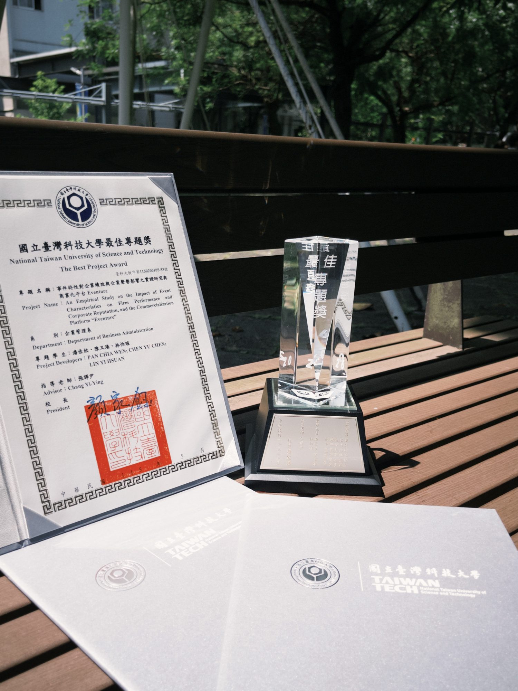

核心能力
流程梳理與需求分析
獵頭交接流程與內部工具的需求整理、功能規劃；產線實習的現場改善建議。
專案推進與跨單位協調
泰北志工團總召，帶領 3 人團隊並對外籌募；課程助教的企業參訪、採購與核銷。
數據與工具應用
月度 KPI 彙整與核對；專題的 SPSS、Stata 分析；運用 AI 工具輔助工作與文件處理。
關於我
國立台灣科技大學企業管理學系畢業，研究興趣在策略管理。大學專題擔任組長，負責問卷設計、資料清理與 SPSS、Stata 分析。
目前在製造業的總經理室擔任經營企劃專員，協助月度 KPI 彙整、跨部門改善追蹤與經營會議籌備。先前在獵頭公司實習，參與內部交接流程與工具的需求整理和功能規劃；也擔任過課程助教，負責企業參訪、教材採購與結案報告。
大學期間擔任國際志工社海外營總召，帶領團隊籌募資源並完成泰北華文教學服務。
學歷
國立台灣科技大學 企業管理學系 學士
國立彰化高級商業職業學校 商業經營科
檢定證照
會計（5）
- 技術士證－會計事務人工記帳 丙級
- 技術士證－會計事務資訊 丙級
- 商業職業教育學會－會計能力 二級
- 會計師公會－會計專業認證
- TQC－電腦會計 專業級
金融保險（3）
- 人身保險業務員
- 金融常識與職業道德
- FMA 金融管理師
商管與服務（2）
- 商業職業教育學會－商業管理能力 二級
- 技術士證－門市服務 丙級
語言（2）
- 全民中檢 中高級
- 全民英檢 初級
經歷
工作與實習
- 2026.10–現在
- 繼茂橡膠工業股份有限公司 總經理室 經營企劃專員
協助：彙整並審核各事業單位月度 KPI，核對數據正確性，並追蹤改善對策
協助、負責：追蹤跨部門提案改善與系統問題處理案件；負責撰寫會議紀錄與結案通知
觀察與建議：對照品質系統文件進行跨廠區產線實習，整理作業流程，並以簡報提出現場管理改善建議
支援：高階經營會議籌備與部門文件管理 - 2026.1–2026.6
- 冠仕國際顧問 助理顧問（實習）
協助整理人才與職缺的交接流程，訪談同事後規劃功能，並參與內部交接工具上線後的使用者測試與優化 查看更多 - 2025.9–2025.12
- 台科大 國際人力資源管理課程助教
全英語授課課程：企業參訪與業師演講的對接、哈佛個案教材採購與核銷、作業進度追蹤、結案報告與紀實影片製作
工讀與打工經驗
- 2024.8–2026.6
- 結構群大陸圖書店 櫃台人員
獨立負責門市日常營運（進貨、上架、結帳）、粉絲專頁新書推廣與主題書單、AI 翻譯輔助的文件翻譯 - 2024.2–2026.6
- 台科大圖書館 流通櫃台工讀生
第一線讀者服務與投訴應對（依 SOP 記錄並分類回報）、外籍讀者協助、館藏上架、畢業生離校手續審查 - 大學期間
- 小琉球民宿 打工換宿（累計 3 次，共 7 週）
獨立負責主管不在時段的現場營運與進貨核對、協調外包房務與洗滌廠商、客房檢查與包棟維護 - 2020.6–2022.6
- 水上樂園 暑期工讀生
販賣部與泳裝部盤點與採購建議、園區巡檢維護、滑水道客流管制與驗票 - 2020.2–2022.3
- 泰式料理 外場人員
外場送餐優先順序調度、尖峰節日桌次排程、外場人員工作分配、吧檯與庫存回報
社團與幹部
- 2024.2–2024.9
- 國際志工社海外營 總召
籌得補助與贊助合計 11.8 萬元，帶領 3 人團隊赴泰北進行華文教學 查看更多 - 2023.2
- 中友會返鄉服務營隊 活動組
- 2020.9–2021.6
- 辯論社 副社長
- 2019.9–2022.6
- 班長（2019.9–2020.6、2021.9–2022.6）
作品
核心案例
獵頭交接工具流程優化與系統導入整理人才與職缺交接流程，提出邏輯模型與功能規劃，並參與上線後的測試與優化。
查看案例泰北華文教學志工計畫專案管理擔任總召，籌得補助與贊助合計 11.8 萬元，帶領 3 人團隊完成赴泰北服務。
查看案例專題研究與 Eventure數據分析與商業化臺科大最佳專題獎事件特性對企業績效與企業聲譽影響之實證研究與商業化平台 Eventure；擔任組長，負責問卷設計、資料清理，並使用 SPSS、Stata 進行統計分析。2026 年 5 月獲國立臺灣科技大學最佳專題獎。研究成果與方法延後公開。

智慧家電系統整合平台企劃產品概念創新創業課團隊企劃：整合照明、空調與安防的一站式平台，含市場定位與 APP 介面雛型。
查看其他課程報告
延伸
正在學習
運用 Claude 等 AI 工具，把需求整理成可用的網頁與文件，例如這個作品集網站。
聯絡方式
面試與提問歡迎聯絡我；也接受小型企劃撰寫的合作，歡迎透過 LinkedIn 聯絡。
LinkedIn